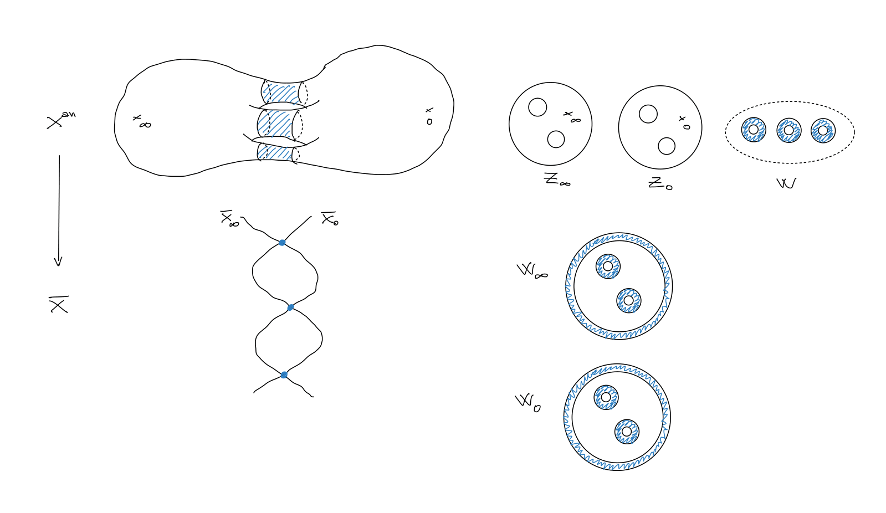

About
I am a PhD student at Leiden University under the supervision of Jan Vonk.
My research interest lies in Algebraic Number Theory and Arithmetic Geometry in the broadest sense.
I am mainly interested in everything that revolves around elliptic curves, modular curves, modular forms and L-functions.
Papers
- A \(p\)-adic cohomological approach to congruences of meromorphic modular forms (2026, pdf | arXiv).
- \(p\)-adic heights on Shimura curves and higher \(p\)-adic Green functions (2026 with Hazem Hassan, in preparation).
- Zeros of p-depleted Eisenstein series on the supersingular locus (2026 in preparation).
Research Talks and Posters
- YRANT 2026 - A \(p\)-adic cohomological approach to congruences of meromorphic modular forms (slides)
- CAVARET 2 Barcelona July 2026 (poster)
- ChaBONNty conference Bonn July 2026 - speed talk (slides)
- Research School on classical and \(p\)-adic aspects of the Kudla program CIRM June 2026 (poster)
- Rencontres Arithmétiques de Caen June 2026 - A \(p\)-adic cohomological approach to congruences of meromorphic modular forms (poster)
- DocTorV seminar University of Rome Tor Vergata July 2025- A geometric view on congruences of modular forms (notes)
- ALGANT Symposium July 2025 - \(p\)-adic modular forms and their geometry (slides)
Seminar Talks
- Heights on curves - Gross-Zagier formula study group Leiden (link)
- On the geometry of modular curves - Gross-Zagier formula study group Leiden (link)
- Crystalline cohomology I and II - Weil cohomology study group Leiden (link)
- Group schemes à la Mazur I and II - Séminaire Mazur Leiden (link)
- Computation of Heegner points - Number Theory Seminar Leiden

Seminars organised
Education
- Ph.D. in Mathematics, Leiden University, 2023 -
- M2 in Mathematics, Paris-Saclay Universitè, 2022 - 2023 (ALGANT) Master Thesis Two-variable p-adic L-functions with Prof. Pierre Charollois (IMJ-PRG)
- M.sc in Mathematics, Leiden University, 2021 - 2022 (ALGANT)
- B.Sc. in Mathematics, University of Udine, 2018 - 2021

Notes and code
Here are some notes I am working on. These are early draft versions, preliminary versions with possible errors.Please email me if you spot any errors or mistakes!
- Hypercohomology of modular curves (pdf)
- Gauss-Manin connection for families of elliptic curves (pdf)
- On torsion points of prime order on elliptic curves (pdf)
- Group schemes à la Mazur (pdf)
Community service
Peer-reviewed an article for Int. Journal of Number Theory
Teaching assistant
- Elliptic Curves Spring 2026 - Utrecht University
- Modular Forms Fall 2026 - Utrecht University
- Elliptic Curves Spring 2025 - Utrecht University
- Analytic Number Theory Fall 2024 - Utrecht University
- Modular Forms Spring 2024 - Utrecht University
- Algebraic Number Theory Fall 2023 - Utrecht University
Math olympiads
Algebra - Polinomi, disuguaglianze ed equazioni funzionali (in Italian) by Salvatore Damantino, Paolo Bordignon, Alberto Cagnetta and Alessandro Pecile - Scienza Express 2024